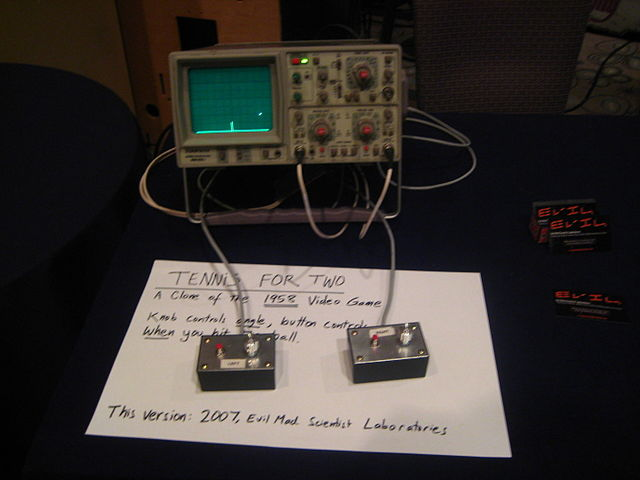

Los Videojuegos: El Origen
¿Cuál fue el origen de los videojuegos?
Todo comenzó en Nueva York en 1958 cuando William Higginbotham utilizó un osciloscopio para crear el primer videojuego de la historia: Tennis for Two. Este fue el pionero y el único en su especie hasta 1962, cuando un grupo de estudiantes del MIT desarrolló el Spacewar. Respecto a este acontecimiento el canal de television Discovery Channel realizo un documental llamado "La Historia de los Videojuegos " ¿Que son y cuando surgen los videojuegos? Cómo surgen los videojuegos? Los llamados videojuegos, surgen tras el fin de la Segunda Guerra Mundial (1945), cuando las fuerzas vencedoras construyeron los primeros ordenadores, uno de ellos fue el Eniac.
Algunos Ejemplos de videojuegos


Explicación Detallada
Mapa en tiempo real
Derechos Reservados©
Hecho por: Angel Donato Lopez Santos, Jose Luis Gutierrez Sanchez, Vicente Emmanuel Rodriguez Reveles